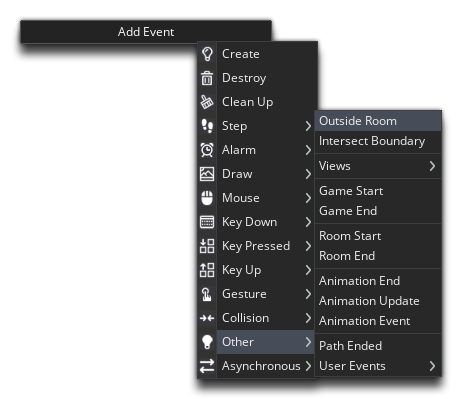

Before we finish this section of the tutorial, we need to do some cleaning up. In programming, there are many ways you can leave things lying around that will "clog-up" the computers memory and cause performance issues or worse. In general this kind of error is called a memory leak, and it's something you want to avoid at all costs in your own proects, meaning that you have to be careful to make sure that your game is programmed efficiently, and you don't leave things when no longer needed, but instead destroy them in some way.
In our game as it stands, we have a memory leak! Our room is only 500x500px, and we wrap our player and our asteroid instances if they go outside that area. But what about our bullets? They fly out the room space... and then what? Well, then nothing! Once outside the room, they are just taking up memory space without actually performing any useful task in our game, so we want to destroy them when they can no longer be seen.
We want to add an Outside Room event to our bullet object "obj_bullet", so do that now:

This event will only be triggered when the instance x/y position goes outside the room edges. In this event we'll simply add:
instance_destroy();
That's all we need to tell the instance that if it leaves the room, it should destroy itself. Memory leak averted!
Click the "Next" button to continue on to the next part - Score, Lives and Effects...